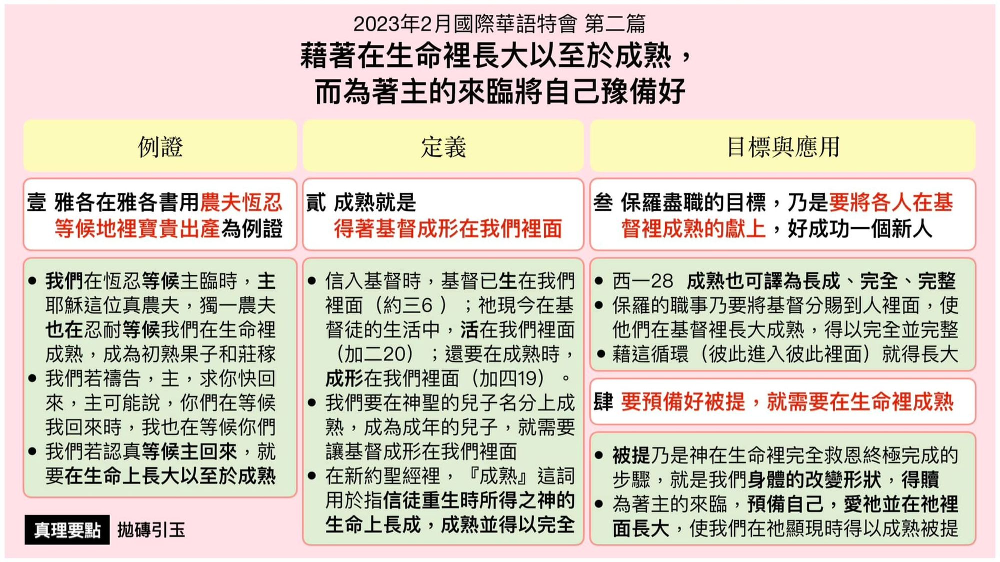

第二篇 借着在生命里长大以至于成熟，而为着主的来临将自己预备好
前言
主的再来并非是一个道理，乃是关乎我们的 生活。我们不仅知道主要再来，更要天天、 时刻儆醒的把自己豫备好，因为主来的那日 子、那时辰，没有人知道。虽然主再来时， 会发生许多外面的征兆，但因着我们爱主和 祂的显现，我们就能天天将自己豫备好。照 路加十五章的记载，我们的父神也是天天豫 备好，等候祂所爱的那流浪的儿子能回家。 我们的生活也该是因着我们爱主，而天天将 自己豫备好，等候祂的来临。
真理要点(鸟瞰)
壹 如农夫忍等出产 ：①真正独一的农夫②主等候我们成熟 ③成熟催促主回来④极大帮助的领会
贰 基督成形在我里 ：①经过重生与变化②成为成年的儿子 ③生命长成得完全
叁 保罗尽职的目标 ：①成熟这辞的意义②人在基督里长成 ③藉着循环而长大④我们事奉的目标
肆 我们被提的条件 ：①被提是身体变形②非一夜之间的事 ③成熟的六项标记
经历应用(操练)
我们要帮助圣徒们在内住的生命之灵里，与神有 交通，更多、更深的经历主的死与复活；并在祂生 命的光中，靠着里面恩典的供应，对付那些顶撞 神，与神不合的成分，包括对付罪 、世界、 良心 、 肉体、天然，以及对付灵里一切不平、不稳、不妥 的感觉；让主在凡事上居首位，并且让祂的灵在 里面一直作圣别 、变化的工作，直到我们被神充 满，成为神一切的丰满。这样生命长大成熟的结 果，便叫基督成形在我们里面。
负担
虽然被提是在于个人的成熟，但在豫备的事上 仍是团体的。没有召会生活，很难豫备好或成 熟。事实上，甚至在召会中，任何人也很难单独 成熟。真实的生命长大和真实的生命成熟是个 人的，却不是单独的，乃是团体的。我们若在生 命里真实的长大并成熟，就会与人有正确的相 调和建造。召会生活帮助我们长大并成熟 。
